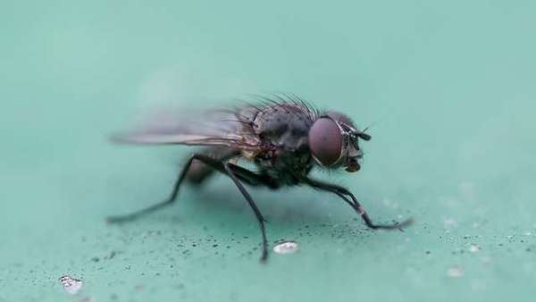

Comment nettoyer les taches de café sur moquette de bureau ?
Il existe plusieurs façons d’éradiquer les mouches, mais les suivantes comptent parmi les plus efficaces. Cependant, pour ne plus revoir les mouches, il vaut mieux privilégier l’intervention d’un expert en extermination de nuisibles.

Opter pour les plantes à fort pouvoir répulsif
Certaines plantes aident en cas d’invasion de mouches à Paris. Ces insectes ne supportent pas le parfum qu’elles dégagent. En effet, pour les éloigner, il suffit d’en planter quelques pieds autour de la maison ou sur le bord des fenêtres. Par exemple, la menthe pouliot et les œillets d’inde sont efficaces pour chasser les mouches. Il en est de même pour le basilic et le pélagorium ou le géranium. Outre ces plantes, il existe d’autres moyens pour s’en débarrasser.Comment choisir la meilleure box TV ?
Protéger la maison avec des moustiquaires Une seule femelle qui pénètre dans la maison peut donner un millier de mouches après quelques jours. Ces insectes se multiplient à une vitesse étonnante et peuvent envahir toutes les pièces en peu de temps. Durant leur courte vie (19 jours), les femelles sont capables de pondre 5 fois avec une centaine d’œufs à chaque ponte. La durée d’incubation n’est que d’une journée et les œufs éclosent pour donner des larves. Au bout de 5 jours, ces dernières se transforment en pupes et en 10 jours, elles deviennent adultes. En effet, s’ajoutant aux répulsifs, placer des moustiquaires sur les fenêtres aide également à prévenir une invasion de mouches à Paris. Elles les empêchent de pénétrer dans la maison et d’y installer leurs nids. Si les moustiquaires ne suffisent pas, il faut trouver des solutions plus efficaces pour lutter contre les mouches.Fabriquer un piège fait maison
Ces insectes raffolent des fruits et il est alors facile de les attraper avec ceux-ci comme appâts. Pour confectionner un piège à mouches, il faut alors se munir de : Un fruit bien mûr (presque avarié) Un récipient en verre ou un bocal Du film alimentaire 1 cure-dent De l’eau savonneuse Voici comment le préparer : Mettre le fruit dans le bocal Couvrir le bocal avec le film Trouer le film avec le cure-dent Installer le bocal dans le lieu infesté Attirées par l’odeur du fruit, les mouches vont se précipiter et entrer dans le bocal par le trou. Une fois emprisonnées, elles peuvent être capturées et noyées dans l’eau savonneuse.Maintenir la salubrité de la maison
Les mouches ne peuvent pas survivre dans une maison propre. Elles n’y trouvent ni nourriture ni zone de confort pour installer leurs œufs. En effet, pour éviter qu’une invasion de mouches à Paris ne survienne, il faut assurer la propreté. Comment ? Enlever tous les restes de nourritures de la cuisine Nettoyer le plan de travail avec un désinfectant Garder la poubelle fermée Faire la vaisselle dès la fin du repas Entretenir régulièrement les canalisations, car certaines espèces de mouches y déposent leurs œufsDemander de l’aide à un professionnel pour une invasion de mouches à Paris
Quand les mouches commencent à pointer le bout de leur nez, il ne faut pas attendre qu’elles se multiplient pour prendre des mesures radicales. Il est important de contacter immédiatement un professionnel en extermination de mouches qui peut freiner leur reproduction et les éradiquer à temps. Pour cela, il suffit de le joindre par téléphone puisqu’il est disponible tous les jours et 24h/24h. Avec ses expériences et ses compétences, il est le seul à pouvoir les éradiquer de manière définitive. Les astuces maison et les produits vendus en magasin peuvent aider pour une invasion de mouches à Paris, mais leur pouvoir est limité. Il arrive même qu’ils ne donnent aucun résultat. Cela entrainerait alors une perte de temps et une perte financière importante. De plus, certaines substances peuvent être nocives pour la santé.